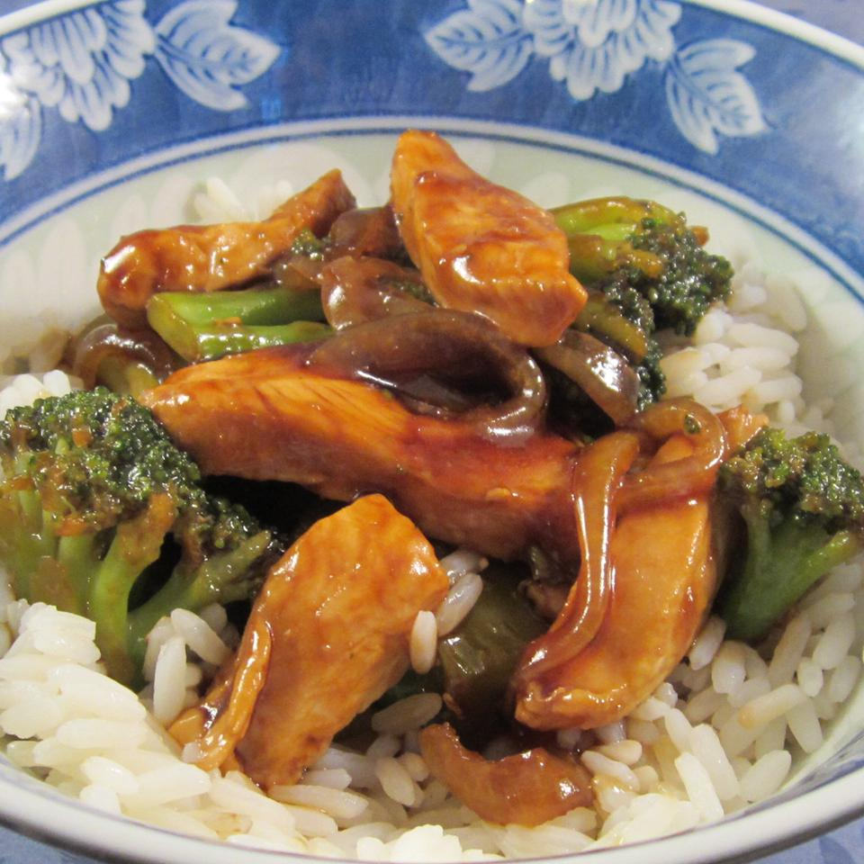

Home
Broccoli and Chicken Stir Fry

Description and Directions
Broccoli and Chicken Stir-Fry, Served with rice.
Step 1
Stir soy sauce, brown sugar, ginger, and red pepper flakes together
in a bowl to dissolve sugar into the liquid. Mix water and cornstarch
together in a small bowl; stir with a whisk until cornstarch dissolves
completely.
Step 2
Heat oil in a large skillet over high heat. Fry chicken and onion in
hot oil until the chicken is no longer pink in the center and the onion is
tender, 5 to 7 minutes. Stir broccoli with the chicken and onion; saute
until the broccoli is hot, about 5 minutes. Push the chicken and vegetables
mixture to the side of the skillet.
Step 3
Pour the soy sauce mixture into the vacant part of the skillet. Stir
the cornstarch slurry into the soy sauce mixture until the color is
consistent. Move the chicken and vegetables back into the center to the
pan; saute until the sauce thickens and coats the chicken and vegetables,
about 5 minutes more.
Ingredients
- ⅔ cup soy sauce
- ¼ cup brown sugar
- ½ teaspoon ground ginger
- 1 pinch red pepper flakes, or to taste
- 2 tablespoons water
- 2 tablespoons cornstarch
- 2 teaspoons vegetable oil, or to taste
- 3 skinless, boneless chicken breast halves, cut into chunks
- 1 onion, sliced
- 3 cups broccoli florets
Nutrition Facts
Per Serving: 356 calories; protein 33.4g;
carbohydrates 40.7g; fat 7.2g; cholesterol 71.9mg; sodium 3307.3mg.
Back to Recipe List Homepage